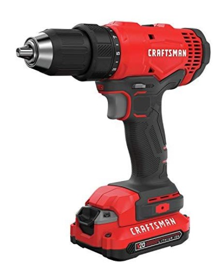

Product Of The week - Coordless Driller
Unmatched Portability: Our cordless drill offers unparalleled freedom of movement, allowing you to tackle projects in any location without being tethered to a power outlet.
Powerful Performance: With a high-performance motor and advanced battery technology,
our cordless drill delivers the power and torque you need to drill
through various materials effortlessly.
Versatile Functionality: From drilling precise holes to driving screws with ease,
our cordless drill is a versatile tool that adapts to a wide range of applications,
making it ideal for DIY enthusiasts and professionals alike.
Ergonomic Design: Designed with user comfort in mind, our cordless drill
features an ergonomic grip and lightweight construction, reducing fatigue during extended
use and enhancing overall control and precision.
Durability and Reliability: Built to withstand the rigors of daily use, our cordless drill
boasts a rugged construction and long-lasting battery life, ensuring consistent
performance and reliability in any environment.
Exceptional Value: With unbeatable performance and durability at an affordable price point,
our cordless drill offers exceptional value for your investment,
empowering you to tackle any project with confidence.